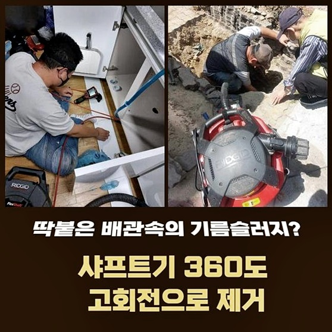
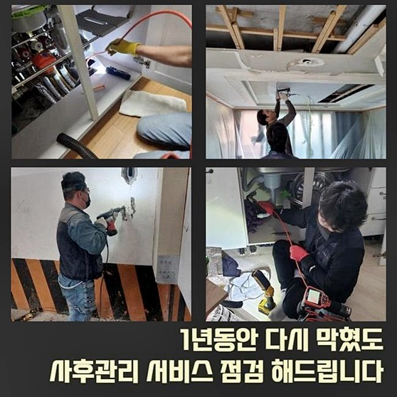
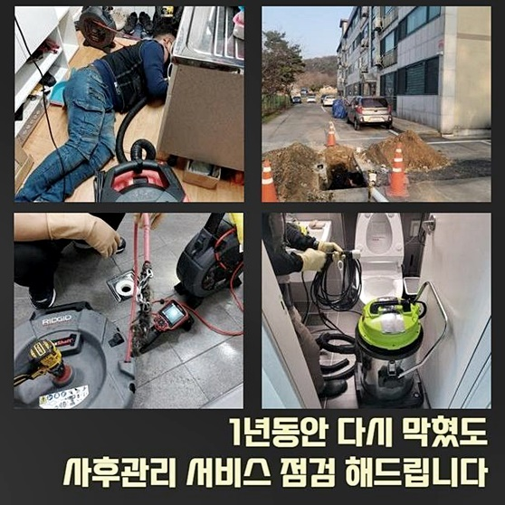
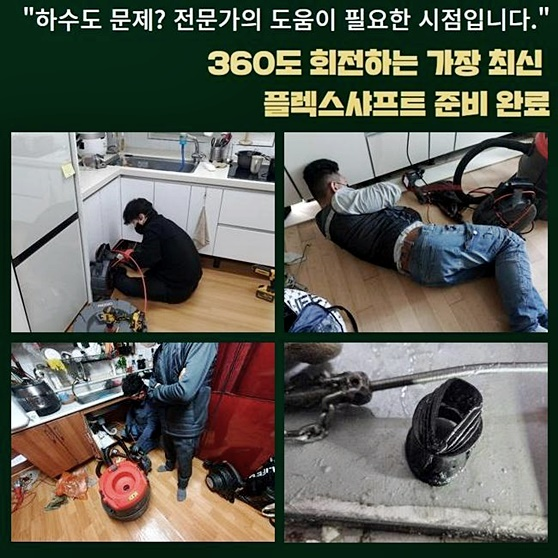
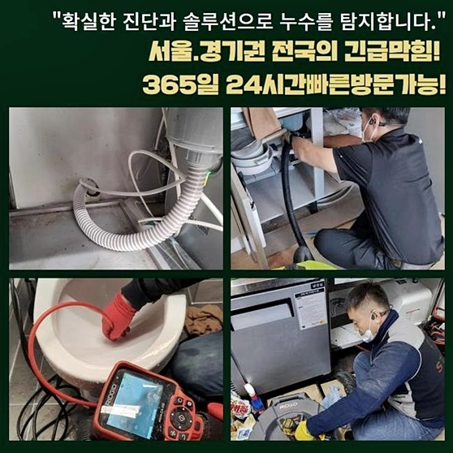
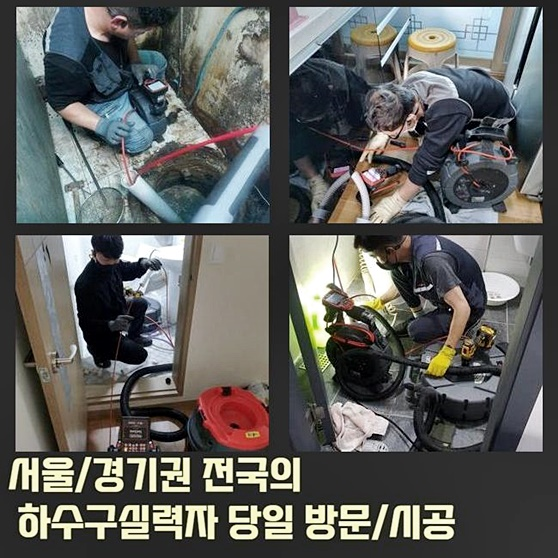

🏠 아산 법곡동화장실뚫음 남동 냄새차단 배관설비공사
용인시 처인구 배관막힘 전문 시공 후기

📋 작업 개요
- 위치: 용인시 처인구, 수원시 영통구, 화성시 동탄
- 서비스 유형: 배관막힘, 고압세척, 내시경점검
- 작업 일시:
- 업체명: 하수구수사대 (010-5615-2118)
🔍 문제 상황
아산 법곡동화장실뚫음 남동 냄새차단 배관설비공사
평화로운 가정일지라도 예기치못하게 생겨나는 애로사항들이 있는데요
아마도 문제들은 배수장애죠
배관에 문제가 생겼을땐 온통 냄새로 환경에 악영향을 미치고 평화로운 공간들이 어느순간 비보건적인 모습으로 바뀝니다
막히는바람에버린바람에 배수들이 불가해지고 오염원이 역류해버리는 상황들이 벌어질 시 온통 환경적으로도 안좋은 국면을 맞이합니다
해당 상황이라면 깔끔하게 뚫는 대응책들을 지원하는게 배수장애를 바로잡는 전문인들의 주특기이죠
지금부터 고객님댁에서 진행되어진 올곧은 과정들을 다시금 말씀드리고자 해요
의뢰자는 베란다쪽에 자리잡은 세탁배관으로 부유물이 빠지지않는다고 저희전문진에게 문의를 주셨는데요
배수문제를 시정해내는 저희업체는 즉각 요구되는 도구들인 샤프트기 석션장치 내시경장치 등을 준비하여 고객님댁으로 달려갔는데요
해당 장소에 도달하니 악취들과 이물들이 솟구치는 것을 보았는데요
바로 하수들을 모으고 통수를 해보기로 했습니다
이러한 절차에서 흔하게 보이는 세제 오염물이 아닌, 배수관에 위치해있던 오염원이 역류되면서 냄새들을 풍기게된건데요

🔎 원인 분석
💡 전문가 진단: 정밀 진단 장비를 사용하여 슬러지의 고착 여부를 판명하고 타격/세척 작업을 실시했습니다.
가끔씩 싱크대라인과 발코니의 관로가 연결되어있는 사항이 있어서 양쪽 관로가 이어진지 체크해보는 점검과정을 이행해요
곧바로 이물들을 인지하고자 고객분에게 몇일전 자리를 잡게되어버리는 징조가 보인다거나 솟구치는 증상이 없었던것인지 여쭤보았습니다
고객분은 몇일전에 배수구쪽을 청소할 목적으로 집에 있던 세제성분과 락스를 부었다고 이야기를 전해주셨어요
그리하여 씽크대쪽과 연결되어있는 관로가 주범일거란 가능성들이 높을거란 예상을 했어요
저희전문인이 찾아뵈었던 고객님댁의 오류지점을 고쳐낼 생각을 하여 원인들을 상세히 파악하는것이 중요해요
그래서 내시경장비를 운용한다음 문제의 바닥배관들을 들여다보기위하여 세팅을 해주었어요
배수관 안이 확실히 시야확보가 안되면 석션장치를 사용한 뒤 고여있는 부유물을 배출시켜줍니다
석션청소기를 사용해서 최초의 청소과정을 실시해주었어요
작업하여주는 시점에서 잔재들과 하수들이 제거됬지만 특정된 원인들은 확실치 않았어요
흔히 있는 석션장치의 가용으론 풀어내지 못하는 경우들이 있어서 즉각 내시경으로 문제를 보이는 안쪽을 체크해야해요
잔해를 상세히 보았더니 실로 뭉쳐진 형태의 잔해물이였는데요
구조로 미루어볼때 베란다쪽에서 빠져나온 옷가지에서 탈락된 잔해일 여지가 농후했습니다

🔧 작업 과정
먼저 이러한 잔해를 빼내준 뒤 앞으로는 심층부의 세척에 몰두했어요
본격적인 사안에서는 심부의 증상들을 시정하도록 배수구 세척과정을 시행해줄때 있어야하는 기술들을 준비합니다
내시경기기를 쓰는 까닭은 심층부의 문제를 상세히 관찰하고 높은 퀄리티의 세척들을 해주기 위해서죠
석션장치로 1차적인 제거를 이행하고서 헤드부에 달려있는 카메라쪽으로 군데군데 구석까지 보았죠
배관 끝까지 점검하면서 증세들이 일어나게된 까닭들을 알게 되었습니다
이와같이 배수장애는 조속히 야기되고 작업수순도 간단그럼에도 불구하고은 않은데요
반대로 전문적 접근과 경험을 함양하고 있는 전문인의 해결방식으로 불편들을 신속히 헤쳐나갈 수 있답니다
막히는 증상이 야기되었을 경우 까닭들과 부위를 찾아나서기위하여 내시경기기를 안쪽으로 투입해보았습니다
사용한 오수들은 복잡스럽게 자리한 배수관으로 이동되는데 배관들은 10m내외인 경우도 있겠지만 수십미터까지 설치되어 있을수도 있는데요
그리하여 외부적인 요소만은 파악이 불가한 배관 관로를 내시경장비로 세세하게 보았죠
안쪽의 상태를 보니 안쪽까지 오염물과 작은 잔재뭉치들이 내측에서 뒤죽박죽인 채로 있었죠
해당 이물들은 수용성이 아니라 조속히 흡착해버려 돌과같이 굳는 특성이있어요
상황마다 가용되는 기기들이 차이를 보이는데 혹여 이물질의 크기가 클 땐 갈고리부분의 기기로 세척하여주고 석션으로 청소시켜요
심하다면 이물이 슬러지모양으로 깊은곳까지 뭉친상태라면 이것들을 조각내는 샤프트가 마련되어야되겠습니다
이물끼리 뒤섞이며 굳게된 슬러지들과 점성을 띄는 것들을 샤프트기기로 탈락시켜주면서 청소시켰어요
샤프트기기는 관로에서 원운동을 하게되며 이물을 잘게 제거하는 필수적인 장비에요
저희전문진이 내방드렸던 장소의 모든 이물이 사라지고서 내시경 내시경기기로 다시금 검수를 이행해 작업들의 결과들을 확인한 다음 배수능력을 확인하는 테스트까지 속행했습니다
그 다음으로 존재하는 잔여 이물이 보이지않을때까지 석션으로 배출시키며 세심히 세척하여 마무리지었습니다
자리를 잡게되어버리는 증상들을 방지하고자 하면 주기적 점검들과 관리들이 수반되어야겠습니다
싱크대의 관로와 이어진 배관쪽에서 식자재의 조각들이 내부에서 막히게되어 솟아오르는 경우도 간혹 있답니다


✅ 작업 완료
막혀버리는 사태가 생겨났다면 서둘러 저희들에게 문의해보세요
저희전문인의 작업절차는 그저 작업이 아닌 고객님댁의 보건성까지 유지시키는 절차라 할 수 있습니다
저희의 경우 막힘들을 확실하게 시정하고 깨끗한 환경들을 이어갈 수 있게 도울게요!
혹여 이에 해당하는 증상들에 노출되었을때 신속히 저희업체에게 문의해보세요!
저희업체의 경우엔 고객님의 수도 사용 실태를 유지할 수 있도록 최선을 거듭합니다



⚠️ 하수구 배관 막힘 예방 및 관리 가이드
- ✅ 머리카락, 비닐, 물티슈 등 물에 분해되지 않는 이물질은 절대 흘려보내지 마세요.
- ✅ 기름기 많은 식기는 설거지 전 키친타올로 먼저 기름때를 닦아내세요.
- ✅ 주기적으로 배수구에 뜨거운 물을 가득 부어주어 유지방 고착을 방지하세요.
- ✅ 작업 후 1년 이내 재발 시 무상 A/S 보증 서비스를 제공합니다.
💡 핵심 정리
- 확실한 장비 작업(내시경 점검 및 샤프트 스케일링)으로 원인을 뿌리 뽑습니다.
- 작업 후 1년 이내에 동일한 부위 재발 시 100% 무상 A/S 서비스를 보장합니다.
- 서울 · 경기 · 인천 전 지역에 24시간 언제든 긴급 출동할 수 있도록 항시 대기 중입니다.
❓ 자주 묻는 질문 (FAQ)
🚨 용인시 처인구 배관막힘 문제로 고민이신가요?
정확한 원인 진단과 확실한 시공으로 재발 없는 해결을 약속드립니다.
24시간 긴급 출동 | 서울 · 경기 · 인천 전지역 | 1년 내 재발 시 무상 A/S